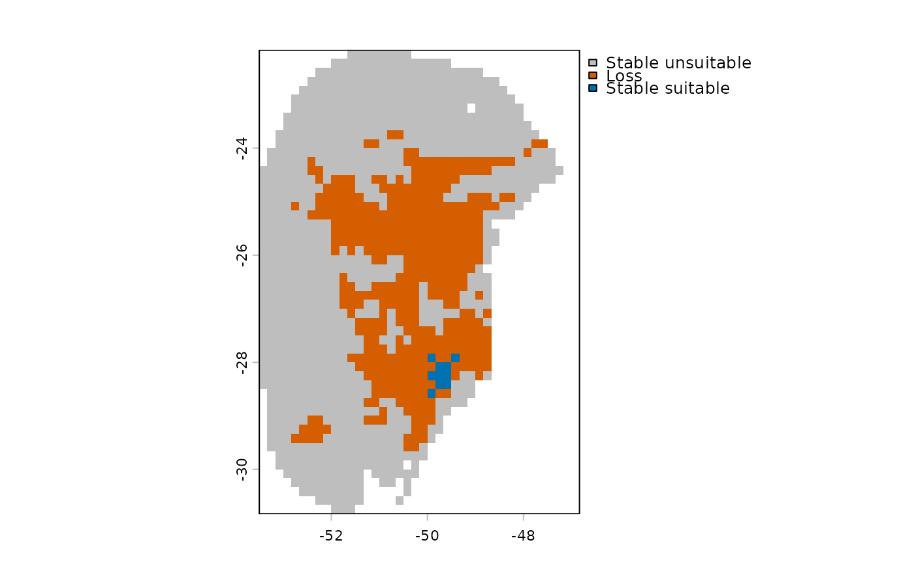

Compute changes of suitable areas between scenarios (single scenario / GCM)
Source:R/prediction_changes.R
prediction_changes.RdCompute changes of suitable areas between scenarios (single scenario / GCM)
Usage
prediction_changes(
current_predictions,
new_predictions,
predicted_to = "future",
fitted_models = NULL,
consensus = "mean",
user_threshold = NULL,
force_resample = FALSE,
gain_color = "#009E73",
loss_color = "#D55E00",
stable_suitable = "#0072B2",
stable_unsuitable = "grey",
write_results = FALSE,
output_dir = NULL,
overwrite = FALSE,
write_bin_models = FALSE
)Arguments
- current_predictions
(SpatRaster) A
SpatRasterobject returned bypredict_selected()with suitability predicted under current conditions.- new_predictions
(SpatRaster) A
SpatRasterobject returned bypredict_selected()with suitability predicted under new conditions (past or future). This SpatRaster must have the same resolution and extent ascurrent_predictions.- predicted_to
(character) a string specifying whether
new_predictionsrepresent "past" or "future" conditions. Default is "future".- fitted_models
an object of class
fitted_modelsreturned byfit_selected()- consensus
(character) the consensus metric stored in
fitted_modelsused to binarize models. Available options are"mean","median","range", and"stdev"(standard deviation). Default is"mean".- user_threshold
(numeric) an optional threshold for binarizing predictions. Default is
NULL, meaning the function will apply the thresholds stored inmodel_projections, which were calculated earlier using the omission rate fromcalibration().- force_resample
(logical) whether to force rasters to have the same extent and resolution. Default is
TRUE.- gain_color
(character) color used to represent gains. Default is "#009E73" (teal green).
- loss_color
(character) color used to represent losses. Default is "#D55E00" (orange-red).
- stable_suitable
(character) color used for representing areas that remain suitable across scenarios. Default is "#0072B2" (oxford blue).
- stable_unsuitable
(character) color used for representing areas that remain unsuitable across scenarios. Default is "grey".
- write_results
(logical) whether to save the results to disk. Default is FALSE.
- output_dir
(character) directory path where results will be saved. Only relevant if
write_results = TRUE.- overwrite
(logical) whether to overwrite SpatRasters if they already exist. Only applicable if
write_results = TRUE. Default is FALSE.- write_bin_models
(logical) whether to write the binarized models for each scenario to the disk. Only applicable if
write_results = TRUE. Default is FALSE.
Details
When projecting a niche model to different temporal scenarios (past or future), species’ areas can be classified into three categories relative to the current baseline: gain, loss and stability. The interpretation of these categories depends on the temporal direction of the projection. When projecting to future scenarios:
Gain: Areas that are currently unsuitable become suitable in the future.
Loss: Areas that are currently suitable become unsuitable in the future.
Stability: Areas that retain their current classification in the future, whether suitable or unsuitable.
When projecting to past scenarios:
Gain: Areas that were unsuitable in the past are now suitable in the present.
Loss: Areas that were suitable in the past are now unsuitable in the present.
Stability: Areas that retain their past classification in the present, whether suitable or unsuitable.
Examples
# Import an example of fitted models (output of fit_selected())
data("fitted_model_maxnet", package = "kuenm2")
# Import current variables for prediction
present_var <- terra::rast(system.file("extdata", "Current_variables.tif",
package = "kuenm2"))
# Import variables for a single future scenario for prediction
future_var <- terra::rast(system.file("extdata",
"wc2.1_10m_bioc_ACCESS-CM2_ssp585_2081-2100.tif",
package = "kuenm2"))
# Rename variables to match the variable names used in the fitted models
names(future_var) <- sub("bio0", "bio", names(future_var))
names(future_var) <- sub("bio", "bio_", names(future_var))
# Append the static soil variable to the future variables
future_var <- c(future_var, present_var$SoilType)
# Predict under present and future conditions
p_present <- predict_selected(models = fitted_model_maxnet,
new_variables = present_var)
#>
|
| | 0%
|
|=================================== | 50%
|
|======================================================================| 100%
p_future <- predict_selected(models = fitted_model_maxnet,
new_variables = future_var)
#>
|
| | 0%
|
|=================================== | 50%
|
|======================================================================| 100%
# Compute changes between scenarios
p_changes <- prediction_changes(current_predictions = p_present$General_consensus$mean,
new_predictions = p_future$General_consensus$mean,
fitted_models = fitted_model_maxnet,
predicted_to = "future")
# Plot result
terra::plot(p_changes)
